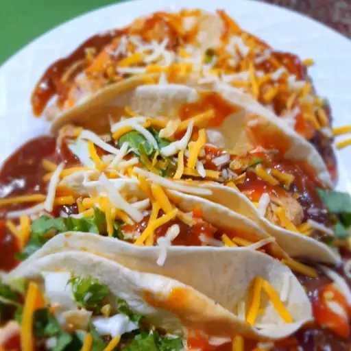

Taco Recipe

Ingredients
- 1 pound skinless, boneless chicken breast halves, cut into bite size pieces
- 1 cup lemonade
- 2 tablespoons olive oil
- 1 tablespoon lime juice
- 1 ½ teaspoons Worcestershire sauce
- ½ teaspoon garlic powder
- ½ teaspoon onion powder
- 1 bay leaf
- 1 (12 ounce) package corn tortillas
- 1 head lettuce, shredded
- 2 large tomatoes, chopped
- 1 (8 ounce) package shredded sharp Cheddar cheese
- 1 (8 ounce) jar salsa
- 1 (8 ounce) container sour cream
Steps
- In a large skillet over medium heat, combine chicken,
lemonade, olive oil, lime juice, and Worcestershire sauce. Season with garlic powder, onion powder, and bay leaf.
Simmer until chicken is no longer pink, and juices run clear, 15 to 20 minutes.
- Meanwhile, warm the tortillas in the oven or microwave until soft. When chicken is fully cooked,
transfer to serving bowl. Place lettuce, tomatoes, cheese, salsa, and sour cream in serving dishes.
Each person can create their own wrap, using their preferred ingredients.
Home Page